Distributionen¶
Installation und Konfiguration von YOPER¶
Vorwort¶
Als erstes möchte ich mich bei Andreas Girardet bedanken, der es durch seine Arbeit erst ermöglichte dieses Dokument zu verfassen.
Auch Rainer Hart hat durch seine Übersetzungen grossen Anteil an dieser Dokumentation.
Diese Dokumentation basiert auf der Version 2.1 von Yoper.
Bedanken möchte ich mich auch bei Helmut Kriege für die prompte Übersetzung der neuen Teile ins Englische.
Bei Kathrin Mathwig und Lars Neubert für das Korrekturlesen.
YOPER Your Operating System¶
Yoper ist ein schnelles auf Intel i686 Prozessoren optimiertes Desktop Betriebssystem. Es ist aus den original Quellen kompiliert (from scratch) und kombiniert sie mit den besten Eigenschaften der grossen Distributionen. Es unterscheidet sich aber grundlegend von ihnen da es kompakt, standardisiert und auf den Desktop optimiert ist, dadurch schneller als das, was Sie von den grossen Distributionen gewohnt sind. Es nutzt in der Verbindung mit den original Quellen für die Grundinstallation RPM, das Red Hat Paketsystem, und Apt4rpm, das das Einspielen neuer Pakete zum Kinderspiel werden lässt. Es verwendet die kudzu Hardware-Erkennung und die Start-Skripte von Red Hat. Des weiteren das Hardware-Setup von Knoppix. Zur einfachen Konfiguration von X-Free wird Sax2 von SuSE verwendet. Es ist geplant Yast2 von SuSE zur Systemverwaltung einzubinden.
An Software werden Kernel 2.6.8, OpenOffice 1.1.2, KDE 3.3, Xfree4.4.0, Mozilla 1.7 und hunderte anderer Softwarepakete mitgeliefert.
Sie können Yoper für folgende Anwendungen nutzen:
als Terminal Server (Dazu müssen sie die Pakete Ydesktop und Terminal Server installieren) als Workstation für Einzel- und Mehrarbeitsplatz-Systeme (Dazu müssen sie das Paket Ydesktop installieren) als Cluster System (Dazu müssen sie das Paket Yminimal installieren) als Entwicklungsumgebung mit der Sie abertausende Softwarepakete übersetzen oder neue Programme entwickeln können als hoch entwickelter und schneller Internet Server als schnelle Firewall und Router
Voraussetzungen zur Installation¶
Da Yoper nicht wie viele andere Distributionen auf der Intel i386 Architektur aufsetzt, sondern auf der Intel i686 Architektur, benötigen Sie mindestens einen Pentium II, Pentium Pro/Celeron, Pentium III/Celeron Coppermine, Pentium 4/Xeon, Athlon/Duron/K7 (Athlon-XP/Athlon-MP) oder einen Cyrix M2 Prozessor.
Sie sollten ausserdem über eine AGP-Grafikarte verfügen wenn Sie XFree und KDE verwenden wollen. Natürlich können Sie auch eine aktuellere PCI Grafikkarte nutzen.
Die Installation¶
Das Installationsmenü von Yoper steht derzeit nur in Englisch zur Verfügung. Das verwendete Englisch ist jedoch einfach und leicht verständlich gehalten. Es wird während der Installation per Voreinstellung das US-amerikanische Tastaturlayout verwendet. Denken Sie also daran, dass unter anderem die Y- und Z-Tasten vertauscht sind, wenn Sie Passwörter vergeben die ein Y oder Z verwenden. Sonderzeichen benötigen Sie während der Installation aber nicht. Innerhalb der jeweiligen Untermenüs navigieren sie mit Hilfe der Pfeiltasten und der Tabulatortaste zu den von Ihnen gewünschten Einstellungen. Eine Auswahl treffen Sie mit Hilfe der Leertaste. Benutzen Sie die Enter-Taste zum Bestätigungen Ihrer Einstellungen.
Von CD-ROM Booten¶
Wenn Ihr BIOS automatisch vom CD-ROM-Laufwerk startet, legen Sie die Yoper-Installations-CD in dieses Laufwerk und starten Ihren Computer neu. Falls Ihr BIOS so eingestellt ist, das Ihr Computer von einem anderen Gerät (Festplatte oder Diskettenlaufwerk) bootet, so ändern Sie die Startreihenfolge in Ihrem BIOS so ab, daß als erstes von CD gestartet wird. Wie Sie das tun, entnehmen Sie bitte der Beschreibung Ihres Computers oder der des Mainboards.
Beim Booten von der Yoper-CD erscheint ein Bildschirm mit dem Bild eines Pinguins und dem Yoper-Logo, sowie einer Eingabeaufforderung, welche Sie mit der Enter-Taste bestätigen müssen. Sie können dem Kernel den Parameter novesa mitgeben, falls ihre Grafikarte mit vesa Darstellung Probleme bereitet.
Andernfalls beginnt die CD nach 30 Sekunden selbstständig mit dem Bootvorgang.
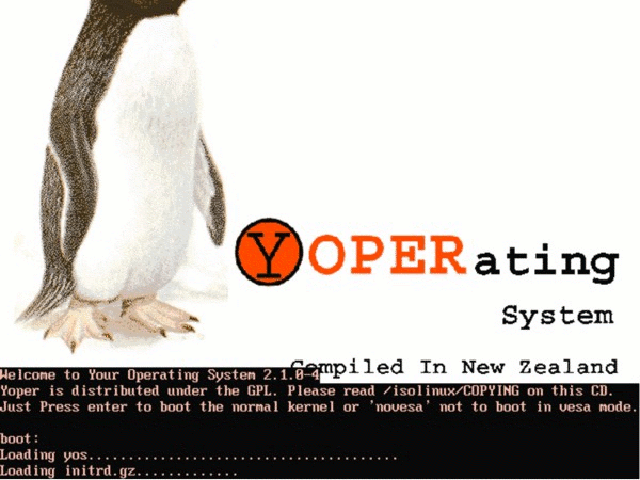Nach dem Booten
Nach dem Booten werden Sie aufgefordert, durch Eingabe des Wortes yoper und Bestätigen durch die Enter-Taste die Installation zu beginnen. Es folgen nun die Lizenzbestimmungen, die Sie lesen und akzeptieren müssen, um mit der Installation fortzufahren. Bestätigen Sie die Aufforderung mit yes und der Enter-Taste.
Es gibt die Möglichkeit die Dateien der CD zu überprüfen. Es wird eine MD5-Checksummen-Überprüfung durchgeführt, um eine Installation mit fehlerhaften ISOs zu vermeiden.
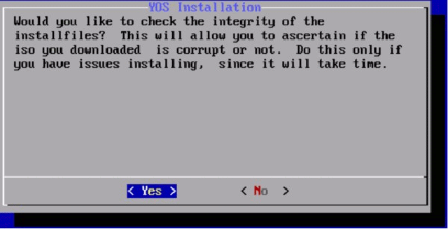Integrationstest der CD
Auswahl der Festplatte¶
Sie werden jetzt dazu aufgefordert, eine Festplatte zur Installation auszuwählen. Das Dialogfenster zeigt Ihnen die aktuellen Festplatte(n) in Ihrem Computer an.
Bedenken Sie bitte das es unter Linux kein Laufwerk C:gibt, sondern die Laufwerke wie folgt gegliedert sind: hdx hd heist Harddisk (Festplatte), das x steht für den Bus an dem die Festplatte hängt. Die erste Festplatte ist hda, die zweite Festplatte ist hdb und so fort. Ähnliches gilt für SCSI-Systeme, die Bezeichnung ist sdx statt hdx. Dabei bedeutet sd eine SCSI Disc, das x steht wiederum für den Bus an dem die Festplatte hängt, auch die Bezeichnung ist ähnlich: sda für die erste Festplatte und so weiter.
Die Auswahl einer Partition erfolgt im Kapitel Festlegen der swap-, home- und Installations-Partition
Das Partitionieren¶
Der hier verlinkte Text war Bestandteil der Original Yoper Version 2.1 Dokumentation. Folgende Abfrage erscheint bei der Installation von Yoper.
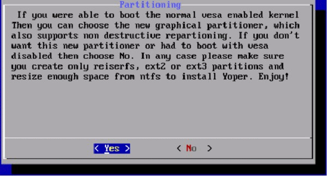Abfrage qtparted oder cfdisk
Folgen sie bitte nun der Beschreibung im Partitionieren Text.
Auswahl der swap-, home- und Installations-Partition¶
Wie im Kapitel Auswahl der Festplatte bereits beschrieben haben Sie sich für eine Festplatte entschieden diese hat nun auch Partitionen.
Eine Festplatte kann verschiedene Partitionen enthalten, jede einzelne von ihnen ist ein eigener Festplattenabschnitt.
So kann eine Festplatte mehrere Betriebssysteme enthalten, oder aber für verschiedene Datenbereiche bzw. Dateisysteme benutzt werden. Zu den oben genannten Parametern hda kommt nun noch die Nummer der Partition. Wenn sie auf der Festplatte hda die erste Partition nehmen wollen wäre es hda1 die zweite Partition hda2 und so fort. Bei scsi-Systemen sda1 und so fort.
Auswahl der swap Partition
Das Installationsprogramm fragt sie nun nach der swap Partition, in unserem Beispiel /dev/hda2, Sie sollten nun die von Ihnen erstellte swap Partition auswählen.
Auswahl der home Partition
Das Installationsprogramm fragt Sie nun nach der home Partition, in unserem Beispiel /dev/hda3, haben Sie die Partition neu erstellt sollten Sie ja auswählen um diese zu formatieren.
Machen sie ein Update einer bestehenden Installation, oder wollen Sie bestehende Daten auf der Partition behalten, wählen Sie bitte nein aus.
Auswahl der root Partition
Das Installationsprogramm fragt Sie nun nach der root Partition, in unserem Beispiel /dev/hda1, diese Partition müssen sie im jeden Fall formatieren.
Auswahl der Dateisysteme
Yoper bietet in der Version 2.1 folgende Dateisysteme für die Partitionen an: Dateisystem Beschreibung ext2 Dies ist das eigentliche Linux Dateisystem, es ist ausgereift und sicher. Es unterstützt kein Journaling, weshalb eine Überprüfung des Dateisystems eine (lange) Weile dauert. ext3 Dies ist die Journaling Version des ext2 Dateisystems. Journaling verhindert lange Wartezeiten beim booten des Computers wenn ihr Dateisystem Fehler enthalten sollte. reiserfs Dies ist ein Journaling Dateisystem das performanter ist als ext2 und ext3, es ist besonders auf kleine Dateigrössen optimiert. reiser4 Dies ist die neuste Variante des reiserfs, es arbeitet besser mit großen Dateien zusammen als reiserfs und hat automatische Dateisystem-Modifikation. Es arbeitet auch mit Log-Dateien zusammen, die sich an verschiedenen Orten im Dateisystem befinden oder deren Ort sich ändert.
Wie auf dem folgenden Screenshot abgebildet, können sie das Dateisystem mit der Leertaste auswählen und die Einstellung mit ENTER übernehmen.
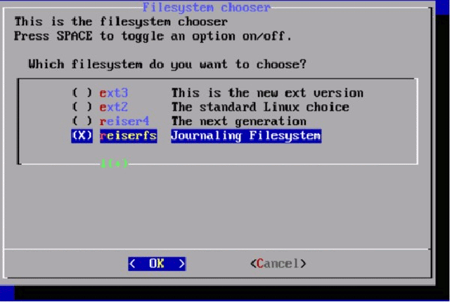Auswahl des Filesystems
Festlegen der zu installierenden Software¶
Je nachdem welche ISO-Datei sie heruntergeladen haben, wird ein Basis-KDE (1600 MegaByte), oder ein minimales System installiert (ca. 400 MegaByte). Beide Optionen bieten Ihnen die Möglichkeit, ein komplettes System so zu installieren, wie Sie es für Ihre Ansprüche brauchen. Ab Kapitel Konfigurieren des Systems erfahren Sie wie Sie mit apt ihr System erweitern können.
Yoper installiert sich nun selbstständig weiter auf Ihrem Computer. Abhängig von Ihrem System kann dies zwischen 5 und 15 Minuten dauern.
Spracheinstellungen vornehmen¶
Yoper bietet nun im Installationsprogramm die Möglichkeit zwischen verschiedenen Sprachvarianten auszuwählen.
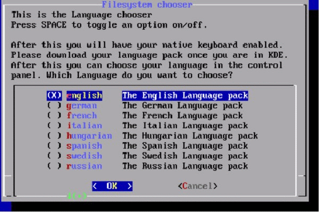Sprachauswahl
Nach dem Neustart des Systems wird die hier eingestellte Variante geladen. Diese Einstellung gilt nur für die Konsolenausgabe der Shell. Für X-Window müssen sie diese Einstellung in sax2 vornehmen. KDE braucht noch das Paket kdei18n-de, das Sie bequem über apt einspielen können. GNOME verwendet die hier eingestellte Sprachvariante automatisch.
PCMCIA¶
Im nächsten Schritt der Installation werden Sie danach gefragt, ob die PCMCIA-Unterstützung geladen werden soll. Wenn sie über einen Laptop oder über PCMCIA Erweiterungen für einen PC verfügen sollten sie hier mit ja antworten.
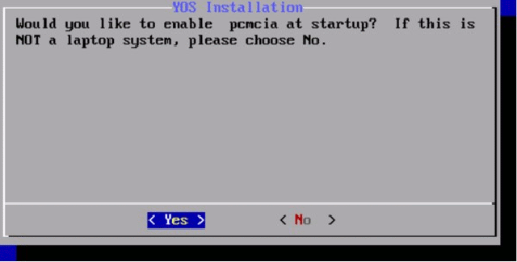PCMCIA Auswahl
Das Netzwerk konfigurieren¶
Vor dem Netzwerk Setup werden Sie gefragt, welche Internetverbindung Sie benutzen:
Would you like to run networksetup now? If this is a DIALUP system, please choose No.
Sollten Sie sich direkt ins Internet einwählen, so beantworten sie diese Frage mit Nein.
DHCP (Dynamic Host Configuration Protocol)
DHCP ist eine Funktion, um ihr Netzwerk automatisch einzurichten und zu verbinden. Um DHCP zu benutzen, muss ein Computer in Ihrem Netzwerk bereits vorhanden sein, der die notwendigen Einstellungen übernimmt. Dieses ist in vielen Büros der Fall, und kann bei einigen Verbindungen möglich sein ( z. B. bei einem DSL-Router).
Wenn Sie sich unsicher sind, sprechen Sie mit Ihrem Netzwerkadministrator oder schauen Sie in die Anleitung Ihres Routers. Wenn Sie sich dazu entscheiden, DHCP zu benutzen, werden die nächsten Schritte übersprungen.
Falls Sie sich unsicher sind, ob Ihr Computer DHCP verwendet, ist es am besten, Nein auszuwählen und ihr Netzwerk manuell einzurichten. Falls sie die Frage bejahen, und kein DHCP haben, dauert der Bootvorgang immer sehr lange.
Sie können das Problem damit beheben, in dem Sie auf Y klicken nach dem Booten, Run command auswählen, kdesu konsole sowie Ihr Root-Passwort eingeben, und networksetup in die daraufhin erscheinende Konsole eingeben.
Netzwerk von Hand konfigurieren
Wenn sie an einem Lokalen- oder in einem Firmen-Netzwerk angeschlossen sind das kein DHCP zur Verfügung, stellt müssen Sie das Netzwerk von manuell konfigurieren. Wenn es einen Netzwerk Administrator gibt fragen sie ihn nach den unten angegebenen Daten.
Hostname eingeben Der Hostname ist der Name, der Sie in Ihrem Netzwerk identifiziert. Ihr Standort hat vielleicht ein Namensschema oder einen Standard für die Namensgebung der Computer. Wenn nicht, wählen Sie einen für Sie sicheren Namen. Sollten Sie einer Arbeitsgruppe angehören, dann hängen Sie diese an Ihrem Hostnamen, z.B. computer.arbeitsgruppe. Wenn Sie keiner Arbeitsgruppe angehören, brauchen Sie sich darum nicht zu kümmern.
Gateway eingeben Ein Gateway ist ein Computer, der andere Computer im Netzwerk zusammen verbindet (in der Regel ins Internet).
Bei Netzwerkcomputern, die nicht direkt auf Ihr Netzwerk zugreifen können, brauchen Sie ein Gateway.
Sollten Sie so einen Computer in Ihrem Netzwerk haben, dann tragen Sie hier dessen IP ein.
Internet Protokoll eingeben Obwohl es eigentlich ein Internet-Protocol ist, wird TCP/IP auch für die Kommunikation innerhalb Netzwerke verwendet. Dies ist eine einfache Möglichkeit über das Netzwerk auch ins Internet zu gelangen. Wenn Sie mit einem lokalen Netzwerk verbunden sind, befragen Sie Ihren Netzwerkadministrator nach der IP-Adresse.
Netzwerkmaske eingeben Die Netzwerkmaske wird dazu benutzt, um festzustellen, ob ein Computer im Netzwerk direkt erreichbar ist (LAN), oder ob er über den Gateway erreichbar ist. Wenn Sie unsicher sind, fragen Sie Ihren Netzwerkadministrator. Für kleine Netzwerke ist dies normalerweise 255.255.255.0.
Broadcastadresse eingeben Die Broadcastadresse ist eine spezielle Adresse, auf die alle Computer im Netzwerk reagieren, wenn sie richtig eingestellt ist. Normalerweise beinhalten die ersten drei Zahlen die von den Computern im Netzwerk, gefolgt von der Nummer 144, z.B. wenn Ihr Computer die IP-Adresse 192.168.1.1 hat, dann dürfte die Broadcastadresse 192.168.1.255 sein. Wie immer gilt auch hier: Fragen sie sicherheitshalber Ihren Netzwerkadministrator.
DNS-Server eingeben Ein Domain Name System (DNS) ist ein Server, der Ihre Computernamen und Internetadressen anhand numerischen Angaben verwaltet. Vom Prinzip her genauso, als wenn Sie ins Telefonbuch schauen, um die Telefonnummer einer Person zu suchen. Ohne DNS müßten Sie die numerische IP-Adresse der jeweiligen Internetseite kennen, um hierauf zugreifen zu können. Geben Sie bitte die genaue, gültige DNS-Adresse hier ein. Sollten Sie einen Router bzw. ein Gateway besitzen, funktioniert möglicherweise dieser als DNS-Server. Schauen Sie dies in der betreffenden Betriebsanleitung nach. Ansonsten geben Sie die IP-Adresse Ihres Providers an. Haben Sie einen Netzwerkadministrator, so befragen Sie diesen nach den genauen Angaben.
DSL konfigurieren
Die DSL-Konfiguration von Yoper ist standardmässig installiert. Der Zugang wird über rp-pppoe konfiguriert. Dies können sie im Anschluss an die Installation durchführen.
Da es schon mehrere Beschreibungen für das Einrichten von rp-pppoe gibt, sei hier auf den adsl Text von SelfLinux und die hervorragenden Seite von de http://www.adsl4linux.de/howtos verwiesen.
Grundeinstellungen zum Start¶
Sie werden nun gefragt ob sie grafisch oder auf der Konsole arbeiten wollen.
Wollen Sie X-Window beim Starten aktivieren?
X-Window ist die Basis für ein grafisches System, hier dem KDE. Wenn Sie mit Yes zustimmen, wird es automatisch vorkonfiguriert.
Wenn dies eine Minimalinstallation für textbasiertes Arbeiten sein soll, verneinen Sie die Frage mit No.
Lilo im MBR (Master Boot Record)
LILO, der Linux Loader, ist eine Software, welche Ihr Betriebssystem identifiziert, bzw. Sie eine Auswahl der auf Ihrem Computer vorhandenen Betriebssysteme vornehmen läßt.
Wenn Sie ein installiertes Microsoft Windows (R) auf Ihrem Computer haben, so wird dies automatisch erkannt und auch eingebunden.
Beachten Sie daher bitte, daß es sich als sehr sinnvoll erweist, von ggf. anderen vorhandenen Betriebssystemen Bootdisketten zu erstellen, bzw. diese bereit zu halten.
Im Anschluß an die Installation läßt sich LILO dann nachkonfigurieren. Es besteht nun auch die Möglichkeit GRUB einen weiteren Bootlader der unter Linux viele Anhänger hat einzubinden. GRUB ist experimental in Yoper eingebunden und verfügt noch nicht über die Unterstützung wie LILO.
Beachten Sie bitte das die verwendete GRUB Version Reiser4 nicht unterstützt. Für Reiser4 müssen sie LILO verwenden.
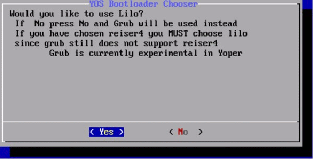Auswahl lilo oder grub
Bootrecord in der root Partition
Wenn sie den Bootrecord nach / schreiben denken sie daran die Partition in Ihren bestehenden Bootloader zu integrieren oder sie nutzen die Bootdiskette. Ihr yoper wird nach dem beenden der Installation nicht selbstständig starten.
ALSA Soundtreiber installieren¶
Im nächsten Schritt der Installation können Sie Ihren Soundkartentreiber auswählen.
Advanced Linux Sound Architectur (ALSA) setup, bietet Ihnen nun die Möglichkeit Ihre Soundkarte auszuwählen und sie automatisch in das System einzubinden. Wählen Sie bitte ja aus um dies zu tun.
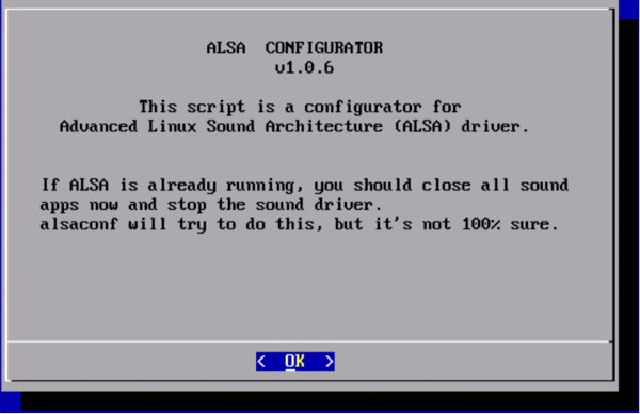Soundkarte konfigurieren
Zeitzone einstellen¶
Jetzt werden Sie nach einigen lokalen Informationen und Ihrer Zeitzone gefragt. Tragen Sie hier Ihren Ländercode für Ihre Region ein. Sobald Sie Enter gedrückt haben, wird Ihnen eine Liste von Länder in Ihrer Region angezeigt. Geben Sie hier Ihr Land ein und Ihre Regionalen Einstellungen sind komplett.
Benutzerdaten eingeben¶
GNU/Linux Distributionen sind netzwerkorientiert, das heisst sie müssen sich mit einem Namen und einem Passwort im System anmelden. Dies sollten sie unbedingt tun damit dritte keinen Zugang zu Ihren Daten erlangen. Es ist eine Unsitte sich automatisch in ein System einzuloggen oder gar als Supernutzer root zu arbeiten.
Nutzer einrichten
Als nächstes werden Sie nach einem Benutzernamen und einem Paßwort für die Identifizierung in Ihrem System gefragt. Dies wird Ihr Standard-Login sein. Ein Unix basiertes System unterscheidet zwischen Gross- und Kleinschreibung. Benutzen sie für Ihren Nutzernamen nur kleine Buchstaben da sie sonst Schwierigkeiten bekommen da das Anmeldeskript nur kleine Buchstaben erwartet.
Merken Sie sich Ihr Passwort gut, es ist der Schlüssel für Ihren Computerzugriff.
Der Benutzername sollte relativ kurz, aber eindeutig sein. Er kann Buchstaben und Zahlen enthalten, aber keine Sonder- oder Leer-Zeichen. Die einzigen erlaubten Sonderzeichen sind - (Bindestrich) und _ (Unterstrich).
Das Passwort hingegen darf alle möglichen erwünschten Zeichen enthalten. In der Regel sollte es so gross wie möglich aber mindestens sechs- bis achtstellig sein. Die Verwendung von Sonderzeichen, Zahlen und Großbuchstaben helfen Ihnen dabei, ein möglichst sicheres Paßwort zu erstellen. Sie werden zur wiederholten Eingabe Ihres angegeben Paßwortes gebeten. Sollten Sie hier einen falschen Eintrag machen, werden Sie dazu aufgefordert, es erneut zu versuchen. Das System wird Ihre Eingabe des Paßwortes nicht auf dem Display anzeigen.
Supernutzer root einrichten
Nun werden Sie zum Erstellen eines Root-Paßwortes aufgefordert. root ist der Systemadministrator Ihres Linux-Systemes. Er allein hat uneingeschränkten Zugriff auf die Betriebsinterna Ihres Computers. Normalerweise sollten Sie sich lediglich als normaler Benutzer in Ihr System einloggen, als root nur dann, wenn Sie systemspezifische Änderungen vornehmen wollen. Dies dient der Sicherheit und Stabilität Ihres Systems.
Wichtig: Begeben sie sich niemals als Root in das Internet, da Sie sonst Angreifern die bequemste Tür zum Einfall öffnen.
Beenden der Installation¶
Schließen Sie nun die Installation in den folgenden Zeilen mit exit (Enter) und reboot (Enter) ab. Wenn Ihr Computer neu startet, nehmen sie die Yoper-Installations-CD aus CD-ROM-Laufwerk. Jetzt wird YOS gestartet.
Neustarten und grafischen Login konfigurieren¶
SaX2
Nach erfolgreicher Installation wird SaX2 automatisch gestartet und stellt Ihnen einen Vorschlag für die X-Konfiguration zur Verfügung. Dies ist in der Regel eine VESA-Konfiguration! Wird Ihre Grafikkarte von X unterstützt sollten Sie auf jeden Fall die Einstellungen ändern. Sind Sie mit dem Vorschlag einverstanden übernehmen Sie ihn mit OK, sollten Sie nicht einverstanden sein betätigen sie den Schalter Change Configuration.
Wird Ihr Monitor nicht automatisch erkannt geben sie die Daten anhand Ihres Monitorhandbuchs an. Ist Ihr Monitor konfiguriert, stellen Sie nun die Grafikkarte ein. Es werden eine Vielzahl von Grafikkarten unterstützt.
In Colour and Resolution können Sie Farbtiefe und Auflösung einstellen.
In Virtual Resolution haben Sie die Möglichkeit grössere Auflösungen einzustellen als Ihr Monitor darstellen kann.
In der Sektion 3D Acceleration können Sie, falls Ihre Grafikkarte 3D unterstützt, die 3D Fähigkeiten Ihrer Grafikkarte einschalten.
Multihead unterstützt mehrere Monitore an einer Grafikkarte wenn die Grafikkarte dass unterstützt.
Für Eingabe Geräte wie Maus und Tastatur verwenden sie Input Devices.
Sollte wieder erwarten Ihre Maus nicht erkannt werden haben Sie hier eine Möglichkeit sie einzustellen. Es bietet sich an, hier gleich die Tastaturbelegung Ihres Landes für X einzustellen.
Mit Finalize beenden Sie die Konfiguration. Es wird ein Bildschirm gestartet der Ihre gewähten Einstellungen entspricht. Sie können nochmals den Bildschirm einstellen und mit save speichern. Danach wird der kdm gestartet und sie können sich in Ihrem System einloggen.
Konfigurieren des Systems¶
en yoper.com beinhaltet einen Synchronisationsservice, der es Ihnen erlaubt, Ihr System immer auf den aktuellen Stand zu halten. Dieser Service erlaubt es Ihnen, regelmäßig oder gelegentlich nach Updates zu schauen. Downloaden und installieren Sie diese Updates. Die Pakete, die heruntergeladen werden, sind schon kompiliert und stehen jedermann kostenlos zur freien Verfügung. Es ist auch möglich sogenannte Third-Party-Software (von Drittanbietern) zu installieren. Diese werden nicht von Yoper unterstützt und sind nicht in den Updates enthalten.
Debian Installer APT¶
Zitat aus dem APT-Howto de http://www.debian.org/doc/manuals/apt-howto/ch-apt-get.de.html
Am Anfang war das .tar.gz. Benutzer mussten jedes Programm, welches Sie auf ihren GNU/Linux-Systemen benutzen wollten, selbst kompilieren. Zu Beginn der Entwicklung des Debian-Projekts erachtete man es für notwendig, dass das System eine Methode zum Verwalten der Pakete, die auf dem System installiert sind, enthält. Man gab dieser Methode den Namen dpkg. Dadurch war das erste Paket auf GNU/Linux geboren, bevor Red Hat sich entschied, ihr eigenes RPM-System zu erschaffen.
Schnell standen die Macher von GNU/Linux vor einem neuen Problem. Sie brauchten ein schnelles, praktisches und effizientes Mittel, um Pakete zu installieren, das Abhängigkeiten automatisch behandeln und ihre Konfigurationsdateien während des Aktualisierens berücksichtigen würde.
Und wieder war es das Debian-Projekt, das den Weg machte und APT, das Advanced Packaging Tool, welches seitdem von Connectiva auf RPM portiert und von einigen anderen Distributionen übernommen wurde, das Licht der Welt erblicken ließ.
APT verwendet zum arbeiten die Datei /etc/apt/sources.list in der eine Liste von Quellen enthalten ist, von denen Pakete installiert werden können. Ab der Version V2.0pre3 sieht sie unter Yoper folgendermassen aus: sources.list
rpm ftp://us2.yoper.com/pub/linux/yoper/yoper version2 os rpm-src ftp://us2.yoper.com/pub/linux/yoper/yoper version2 os
Der erste Link enthält die vorkompilierten Pakete, der zweite die Quellen der zur Verfügung stehenden Pakete. Die Quellen brauchen Sie aber nur, wenn Sie einmal Schwierigkeiten haben sollten mit einem vorkompilierten Programm.
Wenn sie diese Datei ändern müssen, z. B. wenn es mehr oder andere Quellen für Yoper geben sollte, vergessen sie nicht ein apt-get update zu machen.
APT erkennt Abhängigkeiten zwischen den Paketen. Es löst sie entweder auf, oder installiert die benötigten Programme. Wenn dies nicht möglich ist, gestattet apt nicht dass ein Programm installiert wird. Damit bleiben andere installierte Programme lauffähig.
Grundlegende Befehle¶
Wie oben schon angeführt gibt es Befehle um APT zu steuern. Die Grundlegenden werden Ihnen nun weiter unten vorgestellt. Sie brauchen wenn Sie mit APT arbeiten eine Konsole mit root Rechte. Dies ist der einzige root Zugang den Sie im Internet nutzen sollten! Die Gefahr dass in dieser Zeit in Ihr System eingebrochen wird ist vorhanden. Da Sie ja diesen Prozess überwachen, sollte es nicht zu tragischen Ereignissen für Ihr System kommen. Sie können, wenn sie auf Konsole arbeiten, mit su und Ihrem Supernutzer-Passwort root Rechte erlangen. Das selbe gilt für jedes X-Terminal wenn sie eine GUI benutzen. Verwenden sie nicht su - denn das würde einem Angreifer erlauben auch auf Bereiche Zugriff zu erlangen, den wirklich nur root haben sollte.
apt-get update apt-get update wird dazu verwendet die Paket-Datenbank ihres Computers zu aktuallisieren. Aus den in Ihrer lokalen Paket-Datenbank gespeicherten Informationen werden die Programme installiert. Bevor Sie Pakete installieren, sollten sie immer ein apt-get update machen.
apt-get upgrade Ein apt-get upgrade können sie ausführen wenn Sie Ihr yoper auf den aktuellen Stand bringen wollen. Es installiert abhängig von Ihrer bestehenden Paket-Datenbank aktualisierte Versionen der bereits installierten Programme. Wenn Sie apt-get -s upgrade ausführen, werden Ihnen die zu aktualisierenden Programme angezeigt aber sonst passiert nichts. Der Parameter -s simuliert nur das installieren der Programme.
Wenn Ihnen APT sagt das es Programme zurückhält, liegt das daran dass sie sonst ein unstabiles System erhalten können, da Abhängigkeiten der Pakete nicht aufgelöst werden können. Dazu aber später mehr.
apt-get dist-upgrade Ein apt-get dist-upgrade wird in der Regel gemacht wenn es eine neue Version des Betriebssystems gibt. Ein apt-get dist-upgrade kann auch dazu dienen Pakete zu installieren, die wegen bisher ungelöster Abhängigkeiten nicht installiert wurden.
Dabei versucht apt andere Pakete gezielt nachzuladen, die zur Erfüllung der Abhängigkeiten notwendig sind. Auch diesen Vorgang können sie mit der Angabe -s simulieren.
apt-cache search Wenn sie ein Paket suchen, können sie es mit apt-cache search suchen. Sie brauchen nicht einmal den genauen Namen zu kennen, das eingeben von apt-cache search dvd zeigt ihnen alle Pakete an die entweder im Namen oder der Beschreibung die Buchstaben dvd enthalten.
apt-get install (Paketname) Wenn sie Ihr zu installierendes Programm gefunden haben, können Sie es mit apt-get install Paketname installieren. Wenn das gewünschte Programm andere Programme braucht um lauffähig zu sein, werden diese gleich mit installiert.
Sollten die Abhängigkeiten nicht aufgelöst werden können, wird das Programm auch nicht installiert. Auch hier können Sie zur Simulation den Parameter -s verwenden.
apt-get remove (Paketname) Ein weiterer weg Abhängigkeiten aufzulösen ist es das/die Paket/e die Ihrer Installation im Wege stehen zu löschen. Das ist zwar nicht der Grund warum es diesen Befehl gibt, er ist vielmehr dazu gedacht Programme zu löschen, die Sie nicht mehr benutzen wollen sogar oder nie benutzt haben. Dies hat den Vorteil das sie ein schlankes = schnelles System haben. apt-get remove Paketname löscht das Programm und alle Programme die von ihm abhängen. Deshalb ist auch dort der Parameter -s sehr nützlich um unangenehme Überraschungen zu vermeiden.
synaptic das GUI Frontend für APT¶
Synaptic ist ein Frontend für apt. Alle oben angegebene Möglichkeiten haben sie auch unter synaptic.
Auch synaptic braucht root Rechte, seien Sie also vorsichtig. Sie finden synaptic unter System - Package Manager im KDE-Starter.
Wie bei apt sollten sie erst ein Update machen in dem sie auf den Schalter Auffrischen klicken. Der Schalter Aktualisierungen vormerken gibt ihnen die Möglichkeit zwischen einem normalen und einem intelligenten Update, der Unterschied wird in einem Hinweisfenster erklärt.
Es gibt in synaptic auch die Möglichkeit nach Paketen zu suchen. Dies erreichen Sie, in dem Sie den Suchen Icon anklicken und in das Eingabefeld den zu suchenden Paketnamen eingeben. Sie können mit verschiedenen Kriterien Ihre Suche ausweiten.
Links sehen Sie eine Zusammenfassung der einzelnen Paketgruppen die zur Auswahl stehen. Rechts die einzelnen Pakete mit einer kurzen Beschreibung des Inhalts. Grüne Felder vor dem Paketnamen sind bereits installierte Pakete, graue noch nicht installierte.
Beim anklicken eines grauen Feldes können Sie das Paket zur Installation vormerken, Bei einem grünem erhalten Sie die Möglichkeit das Paket nochmals zu installieren, es zu löschen (nur das Paket) oder vollständig zu löschen (mit allen Paketen die von ihm abhängen).
Sie können mehrere Pakete zum Installieren vormerken. Wenn Sie alle Pakete die Sie installieren wollen selektiert haben, betätigen Sie bitte das Anwenden Icon.
Wenn es keine Abhängigkeitsprobleme unter den einzelnen Paketen gibt werden die Pakete wie unter apt installiert.
Autoren
Arnulf J. Pelzer webmaster@arnulfpelzer.de Andreas Girardet yoper@yoper.com Alan Rowarth Rainer Hart ghostrider@yoper.de Frox haarmann@gmx.com Lars Neubert lars.neubert@yoper.de
Formatierung
Florian Frank florian.frank@pingos.org Frank Börner f.boerner@selflinux.org
Installation und Konfiguration von Knoppix¶
Einleitung¶
Ein Leitfaden für Einsteiger
übersetzt aus dem Englischen und erweitert von Rainer Hattenhauer
Originaltitel: “Knowing Knoppix” von Phil Jones
Copyright Phil Jones / Rainer Hattenhauer 2005
v1.1 15-06-2005
Das Projekt wurde unterstützt von Galileo Press.
Die Original-HTML-Version zur eigenen Weiterverarbeitung findest du unter: http://www.galileocomputing.de/katalog/openbook/
Allgemeines zu Knoppix¶
“Knoppix ist... so überaus nützlich dass es schwer zu übertreffen ist” – slashdot.org
Was ist Knoppix?¶
Das Linux, das von CD läuft
Knoppix ist ein überaus intelligentes Produkt. Es besteht aus einer einzigen CD, mit deren Hilfe Linux auf deinen PC oder Laptop befördert werden kann. Mit Knoppix steht dir ein komplettes Desktopsystem mit Netzwerkanbindung, Multimediafunktionalität und vielseitiger Hardwareunterstützung zur Verfügung. Zum Betrieb des Systems ist keinerlei komplexe Installation notwendig.
Knoppix ist hervorragend geeignet, um die Fähigkeiten von Linux zu demonstrieren, Systeme nach einem Crash wiederherzustellen oder auch einfach nur um deine PC-Hardware zu testen. Die Knoppix-CD enthält ein komprimiertes Dateisystem: Einmal entpackt, wachsen die 700 MB der CD auf ca. 2 GB an Programmen und Utilities an.
Wie Knoppix arbeitet
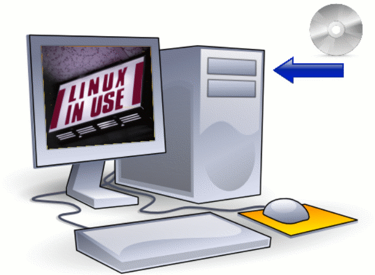Knoppix - Linux einfach von CD starten
Starte deinen Computer mit der Knoppix CD. Die auf der Harddisk des Computers befindliche Software wird ignoriert, auf die Harddisk selbst kann von Knoppix zunächst nur lesend zugegriffen werden. Wenn du deine Arbeit mit Knoppix beendet hast, fahre das System wie gewohnt herunter, entferne die CD aus dem Laufwerk, und schon kannst du wieder mit deinem gewohnten System arbeiten.
Knoppix ist risikolos
Knoppix rührt auf dem PC befindliche Software nicht an. Knoppix kann sogar auf einem Rechner betrieben werden, der überhaupt keine Festplatte besitzt! Die Philosophie von Knoppix ist es, auf existierende Hardware möglichst nicht schreibend zuzugreifen, so dass insbesondere Anfänger nichts falsch machen können.
Knoppix ist anpassungsfähig
Systemeinstellungen und persönliche Daten können auf einem externen Datenträger wie z. B. einer Diskette oder einem USB-Stick gesichert werden. Dadurch kannst du dein persönliches Büro stets mit dir führen.
Knoppix ist frei
Das Beste an Knoppix ist die Tatsache, dass es im besten Sinne frei ist. Du kannst jederzeit die neueste Knoppix-Version von der Knoppix Internetseite http://www.knoppix.net herunterladen. Darüber hinaus gelten die folgenden liberalen Nutzungsregeln:
Du darfst eine unbegrenzte Anzahl von Kopien anfertigen. Du kannst die Kopien auf unbegrenzt vielen Rechnern nutzen. Du darfst Kopien an deine Freunde weitergeben. Es ist gestattet, Kopien zu verkaufen. Du kannst selbst Knoppix-Derivate herstellen (“remastern”). Es ist ebenfalls erlaubt, selbstgemasterte Versionen zu vertreiben.
Was man mit Knoppix anfangen kann¶
Lerne Linux!
Dieses Buch soll dir in erster Linie dabei helfen, deinen ersten Kontakt zu Linux herzustellen. Knoppix ist das perfekte Linux für Einsteiger. Linux wird wohl im IT-Bereich so bald nicht von der Bildfläche verschwinden, so dass die Beschäftigung mit Linux eine Investition in die (berufliche) Zukunft darstellt.
Dieses Buch soll insbesondere diejenigen Anwender ansprechen, die schon geübt im Umgang mit den Routineaufgaben des täglichen Computerlebens sind, mit anderen Worten: Du solltest wissen, wie man mit einer Computermaus, einer Tastatur, einem CD-ROM-Laufwerk usw. umgeht.
Retten und testen
Knoppix ist ein wunderbares Werkzeug, um Computer wieder zu beleben oder zu testen. Ich werde im Folgenden soviel Information wie nötig bereitstellen, damit die wichtigsten Aufgaben auf diesem Sektor erfolgreich zu bewältigen sind. Mit Knoppix kann man:
Dateien von Windowssystemen lesen, selbst wenn diese Systeme sich nicht mehr starten lassen. Vorausssetzung ist natürlich, dass die verwendeten Festplatten keine physikalischen Defekte aufweisen. Daten auf andere Datenträger wie USB-Sticks, ZIP-Laufwerke oder CD-R(W)-Datenträger, Netzwerklaufwerke sichern, vorausgesetzt, man verfügt über die entsprechende Hardware. Hardware identifizieren, wenn dies mit Windows nicht möglich erscheint.
Benutzen und erforschen
Knoppix ist ein vollständiges Desktopsystem. Du kannst es für folgende Zwecke einsetzen:
Drucken. Musik wiedergeben. Ein Scanner oder Digitalkamera auslesen. Eine Verbindung mit dem Internet herstellen. Im Web surfen. E-Mail senden und empfangen. Officeanwendungen, Grafikprogramme, Multimedianwendungen und Spiele unter Linux nutzen.
Netzwerktechnik
Knoppix ist wie Linux ein Kind des Internets. Knoppix integriert sich nahtlos in bestehende Netzwerkstrukturen. Aus Sicherheitsgründen startet Knoppix nicht automatisch irgendwelche Serverdienste, die von außen zugänglich sein könnten und somit ein potentielles Sicherheitsrisiko darstellen würden.
Wem haben wir Knoppix zu verdanken?¶
Knoppix wurde in Deutschland von Klaus Knopper entwickelt. Das Projekt hat sich mittlerweile zu einer großen Angelegenheit vieler freiwilliger Mitarbeiter entwickelt, die sich über das Medium Internet miteinander austauschen. Klaus Knopper leitet das Gesamtkunstwerk Knoppix und arbeitet die Hinweise und Patches der Knoppix-Community ein.
Internetlinks
Die Homepage von Klaus Knopper:
Knoppix ist freie Software¶
Knoppix ist Freie Software und wurde unter der GNU General Public Licence (GPL) lizenziert. Freie Software ist nicht zu verwechseln mit Freeware oder Shareware. Freie Software bedeutet frei im Sinne von Freiheit, was sich nicht notwendigerweise nur im Preis niederschlägt. Im Sinne der GPL ist es gestattet, mit Knoppix zu arbeiten, es zu verändern, zu kopieren, zu verteilen, ja sogar zu verkaufen, solange du dem Kunden die gleichen Freiheiten zubilligst. Diese letzte, aber wesentliche Einschränkung stellt sicher, dass Knoppix auch in Zukunft frei bleiben wird. Für weitere Details informiere dich bitte anhand der in GPL abgedruckten GNU General Public Licence.
Zur Definition freier Software siehe auch:
Einschränkungen¶
Haftungsausschluss
Bedenke stets bei all deinen Arbeiten, dass Knoppix experimentelle Software ist. Es gibt somit keine Garantie für etwaige Schäden, welche du mit Knoppix einem Computersystem zufügst. Benutze Knoppix auf eigenes Risiko.
CD-Betrieb bedeutet “langsam”
Compact Disc Read Only Memory Laufwerke, kurz CD-ROMs, sind wesentlich langsamer als Festplatten. Das heißt, dass einige Anwendungen von der Knoppix-CD wesentlich träger starten, als dies bei einem fest(platten)installierten Linuxsystem der Fall wäre. Knoppix hat allerdings einige Kniffe und Tricks eingebaut, um diesen Geschwindigkeitsnachteil in Grenzen zu halten.
Knoppix kommt nicht sehr weit, wenn das CD-ROM Laufwerk nicht sauber arbeitet oder die Knoppix-CD selbst fehlerhaft gebrannt wurde. Zu diesem Zweck findet man einige Werkzeuge auf der Knoppix-CD, die diesbezüglich die Integrität des Mediums prüfen können.
Nicht alles funktioniert
Knoppix unterstützt ein großes Spektrum der gängigen PC-Hardware, aber nicht unbedingt alles, was auf dem Markt ist. Als Beispiel seien interne Modems oder einige DSL-Modems genannt. Billige Drucker (so genannte GDI- oder Windowsdrucker) mögen ebenfalls unbrauchbar sein, einige billige Farblaserdrucker können ebenfalls ihren Dienst verweigern. Der WLAN-Support steckt teilweise noch in den Kinderschuhen, wenngleich über den Umweg des Ndiswrappers hierfür auch die proprietären Windowstreiber genutzt werden können. Einige Video- und Audiodateien lassen sich nicht abspielen, da die (kommerziellen) Codecs hierfür aus lizenztechnischen Gründen nicht integriert werden dürfen. Leider wirkt sich diese Problematik auch auf die Mehrzahl der im Handel befindlichen DVDs aus. Und schließlich: Normalerweise wird es mit Knoppix nicht möglich sein, Windows Software zu betreiben.
Intensive Benutzung des RAM
Ein Hauptdesignmerkmal von Knoppix ist die intensive Benutzung des PC-Arbeitsspeichers (RAM, Random Access Memory). Je mehr RAM dein Rechner besitzt, umso besser. Für eine adäquate Performance sollten mindestens 128 MByte verbaut sein, wer die grafische Benutzeroberfläche KDE verwendet, ist mit 256 MByte besser bedient.
Wenn du zu den Glücklichen gehörst, die 1 GByte und mehr RAM ihr Eigen nennen, dann kannst du Knoppix mit Hilfe eines kleinen Tricks auch komplett in den Hauptspeicher befördern und dadurch eine beeindruckende Performance aller Anwendungen erzielen.
Doch auch diejenigen, die speichermäßig eher schwach bestückt sind, können durch Verwendung von so genannten Swapdateien oder Swappartitionen, die Bereiche der Festplatte nutzen, in den Genuss von Knoppix kommen. Diese Variante funktioniert allerdings nicht auf allen Systemen und bedeutet in jedem Fall ein Verlust an Leistungsfähigkeit.
Was gehört zu Knoppix?¶
Knoppix ist ein Querschnitt aus einer großen Zahl von Projekten, die das Internet hervorgebracht hat. Einige Projekte, die in diesem Buch angesprochen werden, sind: Projekt Homepage AbiWord Textverarbeitung http://www.abisource.com Audacity Tonstudio http://audacity.sourceforge.net Common Unix Printing System (CUPS) http://www.cups.org Debian GNU/Linux Distribution http://www.debian.org Gnumeric Tabellenkalkulation http://www.gnumeric.org GNU Image Manipulation Program (Gimp) http://www.gimp.org GNU Utilities http://www.gnu.org K Desktop Environment (KDE) http://www.kde.org Linux Kernel http://www.kernel.org Mozilla/Firefox Webbrowser http://www.mozilla.org OpenOffice.org Office Suite http://www.openoffice.org Samba Datei- und Druckerserver für Windows PCs http://www.samba.org Scanner Access Now Easy (SANE) http://www.sane-project.org xine Media Player http://xinehq.de X Multimedia System (xmms) http://www.xmms.org X Window System http://www.xfree86.org
Hierbei ist zu beachten, dass einige der oben erwähnten Programme nur auf der Knoppix-DVD zu finden sind.
Alle diese Projekte zu einem Gesamtkunstwerk zu verbinden ist der Verdienst des Debian Projekts. Knoppix selbst ist eine modifizierte Debian-Distribution, erweitert um die Fähigkeit, direkt von einer CD starten zu können.
Knoppix: Der erste Kontakt¶
“Das primäre Designziel ... ist, das Linux Spaß machen soll” - Linus Torvalds
Überblick¶
Ziel dieses Abschnittes ist es, deinen ersten Kontakt mit Knoppix möglichst schmerzlos zu gestalten. In diesem Unterkapitel werden zunächst keine der vielfältigen Optionen behandelt, mit denen Knoppix gestartet werden kann. Hier geht es primär darum, einen ersten Eindruck vom System zu vermitteln.
Hardwareanforderungen
Die Hardwareanforderungen können wie folgt zusammengefasst werden:
Prozessor: Pentium I 350 MHz (empfohlene Minimalausstattung) Hauptspeicher: 128 MB RAM (für KDE: 256 MB) Entweder: IDE- oder SCSI-CDROM (direkt bootfähig) Oder: 3,5’’ Floppy Laufwerk plus CD-ROM (nicht bootfähig) Grafik: SVGA fähige Grafikkarte (die meisten Karten unterstützen diesen Modus) Monitor: Mindestens 800x600 Pixel Auflösung Maus: Serielle Maus, PS/2-Maus oder USB-Maus
Knoppix starten¶
Wir unterscheiden zwei Stufen beim Starten von Knoppix:
Erste Stufe
Im ersten Schritt des Bootvorgangs besteht die Möglichkeit, diesen direkt durch Eingabe so genannter Bootparameter (im Knoppix-Jargon Cheatcodes genannt) am Bootprompt zu beeinflussen. Hier kannst du z. B. angeben, mit welcher Auflösung dein Desktop gestartet werden soll oder welche Hardwarekomponente ggf. bei der Autokonfiguration ausgelassen werden soll. Um zum Bootprompt zu gelangen, musst du entweder von der CD-ROM oder von einer Hilfsfloppy booten.
Zweite Stufe
Im zweiten Schritt wird das Systemabbild von der CD gestartet. Knoppix folgt dabei den Anweisungen, die du ggf. am Bootprompt angegeben hast.
Die erste Stufe
Zum Bootprompt gelangt man folgendermaßen:
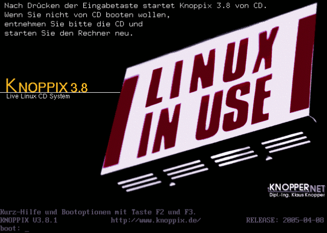Sollte der Rechner bereits gestartet sein, lege die Knoppix-CD ein. Solltest du dich auf dem Windows-Desktop befinden und dein CD-Laufwerk Autostart unterstützen, dann erscheint eine HTML-Seite, die kurz das Wichtigste über das Knoppix-System wiedergibt. Starte den Computer nun einfach neu. Ist der Computer jedoch ausgeschaltet, so schalte ihn ein und lege unmittelbar nach dem Start die Knoppix-CD in dein CD-ROM-Laufwerk. Auf einigen PCs oder Laptop hilft es hier, beim Startvorgang die Pause/Unterbrechen-Taste zu betätigen, um mehr Zeit für das Einlegen der CD zu bekommen. Anschließend setzt ein erneutes Betätigen der besagten Taste den Start fort. Die meisten aktuellen Computer suchen beim Startvorgang nach einer bootbaren CD im ersten optischen Laufwerk. Wurde die CD für bootbar befunden, so sollte dich nun der Knoppix-Bootprompt begrüßen. Dieser befindet sich auf der letzten Zeile des sichtbaren Bildschirms. Sollte die Grafik deines PCs nicht in der Lage sein, das 16-farbige Bootlogo darzustellen, so findest du statt dessen einen einfachen blauen Hintergrund vor. Auf einigen Computern muss aus einem Bootdevice-Menü das Laufwerk, welches die Knoppix-CD enthält, ausgewählt werden. Dieses Menü verbirgt sich meist hinter einer Funktionstaste wie z.B. F12, mehr dazu erfährst du von den Meldungen, die dein BIOS beim Systemstart ausgibt. Die explizite Auswahl des Bootlaufwerks im Bootmenü erfolgt schließlich mit Hilfe der Pfeil-Tasten. Im einfachsten Fall betätigst du nun am Bootprompt die Eingabetaste, und in 99% aller Fälle sollte Knoppix nun durchstarten. Sollte nach 60 Sekunden keine Eingabe erfolgt sein, so wird Knoppix automatisch gestartet. Freunde anderer Sprachen haben an dieser Stelle die Möglichkeit, eine andere Desktoplokalisierung zu wählen, mehr dazu später.
Der Knoppix Startbildschirm
Tipp Solltest du zwei optische Laufwerke in deinem PC verbaut haben, z.B. ein DVD-ROM und einen Brenner, so leg die Knoppix-CD möglichst nicht in den Brenner ein: Dieser kann dann nach dem Systemstart verwendet werden und wird nicht durch die Knoppix-CD blockiert.
Hilfe am Bootprompt erhalten
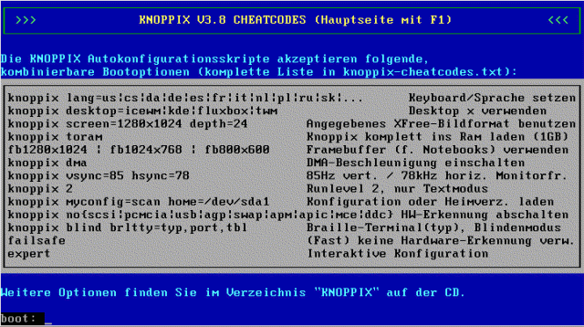Hilfe am Bootprompt
Nichts einfacher als das: Durch Eingabe von F2 oder F3 am Bootprompt gelangst du in zwei kleine Hilfsmenüs, welche die wichtigsten Bootoptionen erläutern. Darüber hinaus wird durch das Betätigen einer der beiden Funktionstasten der Timer für den Bootprozess außer Kraft gesetzt, so dass Knoppix nun nicht mehr automatisch starten wird.
FAQ (Frequently asked questions)
Wie starte ich vom Bootprompt aus wieder mein gewohntes System?
Nimm die Knoppix-CD aus dem entsprechenden Laufwerk und betätige die Reset-Taste oder die Tastenkombination Strg+Alt+Entf.
Wie arbeitet man mit einer Bootfloppy?
Auf älteren Knoppix-CDs findet man meist noch eine Routine zum Erstellen von Bootfloppys aus der Windowsumgebung heraus, bei neueren Versionen kannst du entweder ein Abbild einer solchen Floppy von einem entsprechenden Knoppix-Server aus dem Internet laden oder auf einem System, welches Knoppix problemlos bootet, eine solche Startdiskette erstellen. Wähle dazu den Knoppix-Menüpunkt Utilities/Knoppix Bootdisketten erzeugen.
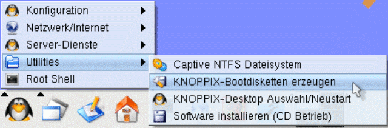Erzeugen von Bootdisketten
Starte nun den problematischen Computer mit eingelegter Bootfloppy und Knoppix-CD. Nach Erscheinen des Bootprompts kann wie gewohnt gearbeitet werden.
Mein Computer hat zwei CD-ROM-Laufwerke. Warum bootet die Knoppix-CD nur in einem der beiden Laufwerke?
Einige BIOS-Varianten können nur von einem primären Laufwerk booten. Eine Möglichkeit, dieses Problem zu umgehen, besteht in der Verwendung einer Bootfloppy. Eine andere Möglichkeit wäre, das gewünschte CD-ROM-Laufwerk als Master an dem entsprechenden Bus zu definieren. Dies geschieht in der Regel durch das Setzen eines Jumpers an der Hardware.
Die zweite Stufe
Sprachauswahl
Die zunächst wichtigste Einstellung am Bootprompt ist die Auswahl der “richtigen” Sprache am Bootprompt. Benutzer aus deutschen Landen müssen sich darüber keine Gedanken machen, da Knoppix standardmäßig die deutsche Lokalisierung verwendet. Anwender aus anderen Sprachbereichen geben den folgenden Befehl zur Lokalisierung ein: boot: knoppix lang=”Landeskürzel”
Die folgende Tabelle zeigt die Kürzel der wichtigsten Lokalisierungen: Kürzel Lokalisierung de deutsch (Standard) be belgisch ch schweizerisch cn vereinfachtes Chinesisch dk dänisch es spanisch fi finnisch he hebräisch it italienisch jp japanisch nl niederländisch pl polnisch ru russisch tr türkisch tw taiwanesisch uk britisches Englisch us amerikanisches English
Die automatische Hardwareerkennung
Nach dem Start führt Knoppix eine Hardwareerkennung durch, die zumindest auf dem Gebiet der Linuxdistributionen ihresgleichen sucht. Dabei werden die verschiedenen Bestandteile deines PCs identifiziert und in das System eingebunden. Da diese Prozedur bei jedem Systemstart im Gegensatz zu einem fest installierten System neu durchlaufen wird, nimmt das Booten der Live-CD eine gewisse Zeit in Anspruch. Die folgende Tabelle zeigt die Erkennungszeiten für verschiedene Systemkonfigurationen: Prozessor RAM CD-ROM Autoconf-Zeit AMD Athlon 64 / 3200+ (2 GHz) 1 GB 52x 35 Sek. Intel Pentium 4 (2,6 GHz) 512 MB 48x 40 Sek. Intel Pentium M (1,5 GHz) 1 GB 40 Sek. AMD Duron (1 GHz) 256 MB 32x 45 Sek. AMD Athlon (600 MHz) 128 MB 24x 1 Min. 30 Sek.
Das X-Window-System
Nach Fertigstellung der Autokonfiguration erscheint am unteren Bildschirmrand die kurze Meldung: INIT: Entering runlevel 5
Dies bedeutet, dass Knoppix nun versucht, das grafische X-Window-System zu starten. Wenn deine Karte vom Grafiksystem unterstützt wird, dann sollte nach kurzer Zeit ein schwarzes Kreuz auf einem grau gestreiften Hintergrund erscheinen, ein Indiz für den korrekten Start von X.
Die KDE Desktopoberfläche
Im letzten Schritt wird schließlich die eigentliche Benutzeroberfläche geladen. Im Falle von Knoppix ist dies das K Desktop Environment, kurz KDE. Erscheint zu guter Letzt die Knoppix-HTML-Startseite, dann hast du gewonnen: Linux, X-Windows und KDE laufen auf deinem Computer!
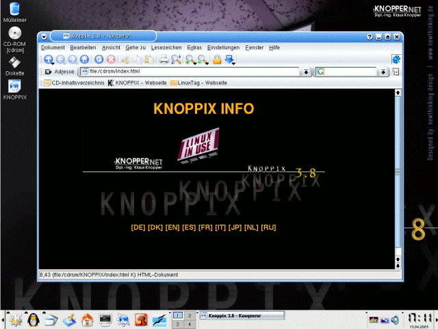Der Knoppix Desktop nach dem Start
FAQ (Frequently asked questions)
Wie ändere ich die Sprachlokalisierung des Desktops?
Gib am Bootprompt die gewünschte Sprache für Desktop und Keyboard über den Knoppix-Cheatcode lang ein. Beispiel: Für eine US-englische Lokalisierung wählt man: boot: knoppix lang=us
Während des Bootvorgangs erscheint die Meldung: cloop: read error
Hier gibt es offenbar ein Problem, die Knoppix-CD zu lesen. Entweder ist dein CD-ROM-Laufwerk oder die Knoppix-CD defekt. Letzteres kann man direkt durch die Eingabe des folgenden Kommandos am Bootprompt testen: boot: knoppix testcd
Ich erhalte einen schwarzen Bildschirm, nachdem das X-Window-System gestartet wurde.
Offenbar arbeitet Knoppix in diesem Fall mit einer Auflösung, die dein Monitor nicht unterstützt. Z.B. hat Knoppix erkannt, dass die Grafikkarte deines PCs in der Lage ist, 1024x768 Bildpunkte darzustellen, aber der Monitor stellt keine dafür erforderliche Zeilenwechselfrequenz zur Verfügung. In diesem Fall sollte die zu verwendende Auflösung direkt am Bootprompt angegeben werden: boot: knoppix screen=800x600
Laptopbesitzer müssen in diesem Zusammenhang für eine vernünftige Darstellung oft in den Framebuffermodus wechseln: boot: fb1024x768
Warum wird der Bildschirm während des Bootens schwarz?
Dies geschieht häufig bei billigen TFT-Monitoren. In diesem Fall verwendet der Kernel die Framebufferkonsole, aber der Monitor beherrscht diesen Modus nicht. Schalte zum Beheben des Problems den Framebuffermodus mit folgendem Befehl aus: boot: knoppix vga=normal
Warum funktioniert meine Maus nicht?
Dieses Problem tritt dann auf, wenn eine PS2-Maus in Verbindung mit einem 9-poligen seriellen Adapter verwendet wird. Versuche in diesem Fall, eine Maus mit direktem 9-poligen Anschluss zu verwenden.
Während des Bootens erscheint die Meldung: Initrd extends beyond end of memory
In diesem Fall übergibt dein Mainboard dem Linux-Kernel die Größe des verbauten RAMs falsch. Hier muss die korrekte Größe des Hauptspeichers am Bootprompt definiert werden: boot: knoppix mem=256M
Der Bootvorgang bricht mit der folgenden Meldung ab: Could not find the KNOPPIX filesystem, sorry. Dropping you to a (very limited) shell
Hier scheint es Probleme zu geben, auf das komprimierte Knoppix-Abbild der CD zuzugreifen. Der Fehler taucht häufig in Verbindung mit CD-ROM-Laufwerken auf, die via PCMCIA am Computer angeschlossen sind. Dieses Problem lässt sich mit folgendem Cheatcode umgehen: boot: knoppix ide2=0x180 nopcmcia
Sollte das nicht funktionieren, so wird offenbar dein PCMCIA-Laufwerk nicht unterstützt. Auch für diesen Fall gibt es eine Lösung: Kopiere das Verzeichnis KNOPPIX von der CD auf eine Linux-lesbare Partition auf deine Festplatte. Das kann eine Partition sein, die z.B. mit einem FAT oder FAT32-Dateisystem formatiert wurde. Das kopierte Abbild kann dann mit folgenden Cheatcode gestartet werden: boot: knoppix fromhd=/dev/hda1
Knoppix beenden¶
Nachdem du nun Knoppix zum Laufen gebracht hast, kann der Desktop erforscht werden. Teste die vielen Programme, die das System mitbringt. Keine Angst, du kannst keinen Schaden an deinem Rechner anrichten: Knoppix greift in der Standardeinstellung nur lesend auf deine Hardware zu. Wie beendet man nun aber das System?
Obwohl es im Falle von Knoppix nicht schadet, einfach den Ausschaltknopf des Rechners zu betätigen, wollen wir uns an dieser Stelle keine schlechten Manieren angewöhnen. Das Herunterfahren des Systems verläuft ähnlich wie bei Windows, nur das man an Stelle des “Start-Symbols das K-Symbol zum Abmelden bzw. Herunterfahren anklickt.
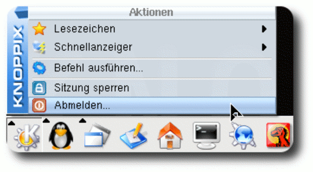Knoppix sauber beenden
Der Shutdown des Systems erfolgt dann in folgenden Stufen:
Nach Bestätigung des Abmeldedialogs wird zunächst die grafische Oberfläche beendet. Am Ende des Shutdownprozesses wird die CD ausgeworfen. Nachdem man die CD aus dem Laufwerk entfernt und die Schublade geschlossen hat, kann der Rechner durch das Betätigen der Eingabetaste ausgeschaltet werden. Sollte das nicht funktionieren, so kannst du den PC an dieser Stelle getrost “hart” ausschalten.
Tipp Ganz fix lässt sich der Rechner mit der Tastenkombination Strg+Alt+Backspace herunterfahren.
Autoren
Rainer Hattenhauer Phil Jones
Formatierung
Frank Börner f.boerner@selflinux.org